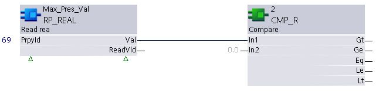
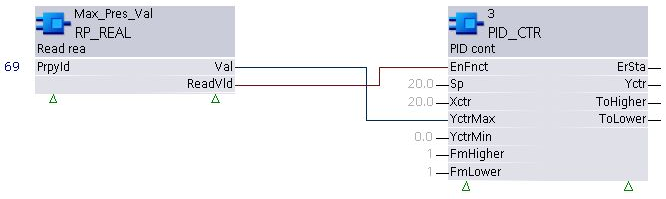
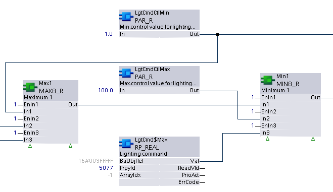

RP_REAL：读取不动产
RP_REAL 从数据点读取数据类型 Real 的指定属性或数组元素值。
Compatible data points:
- Any BACnet data point with a readable property or array element of datatype Real.
参考data point objects有关 BACnet 数据点的详细说明。
NOTICE

Note
远程设备上的某些属性可能需要长达 20 分钟（或远程设备的电源循环）才能使 XFB 看到更改。这不包括系统依赖于值更改通知的属性，例如当前值、状态标志和可靠性。
Pin description (inputs)
BaObjRef | |
|---|---|
BA-Object reference 结构 [BaObjRef] 定义 XFB 和 BACnet 对象之间的绑定连接。绑定会自动发生。 手动配置尝试是不必要的，并且可能会导致系统错误。 | |
DeviceId | 设备标识符 双字（默认值：16#3FFFFF） [DeviceId] 在单个标识符中包含对象类型和对象实例。 它用于识别设备对象：本地或远程。本地设备对象也可以通过值 16#3FFFFF 来标识。 |
ObjectId | 对象标识符 双字（默认值：16#3FFFFF） [ObjectId] 在单个标识符中包含对象类型和对象实例。 它用于识别设备内的对象。 |
ItemId | 物品标识符 整数（默认值：-1） [ItemId] 表示功能视图节点对象中的项目索引，它引用 BACnet 对象。 [ObjectId] 和 [ItemId] 一起定义对 BACnet 对象的间接访问引用。 值-1表示使用直接绑定。 |
PrpyId |
|---|
Property identifier 整数（默认值：0） 正在读取的属性的参数化 BACnet Id 号。 |
ArrayIdx | |
|---|---|
Array index 整数（默认值：-1） XFB 要访问的数组元素的索引号。 [ArrayIdx] 表示可选参数化输入，用于指定对数据类型 BACnetARRAY 或 BACnetPriorityArray 的属性元素的访问。 [ArrayIdx] 在运行时无法更改。 | |
= -1 | [ArrayIdx] 未使用。 |
= 0 | (0) 指定引用属性的数组长度。 Note |
> 0 | 参数化值。 |
Pin description (outputs)
瓦尔 |
|---|
Value 实数（默认值：0.0） BACnet 对象的引用属性的值。 如果以前可访问的对象/属性不再可访问（例如，通信失败），则 XFB 将传递最后一个有效值。 |
ReadVld | |
|---|---|
Read valid 布尔值（默认值：False） 指示所引用的属性是否可访问且可读。 The referenced property must be of the XFB specified datatype. [ReadVld] 不依赖于可靠性。 | |
1（正确） | 引用的属性是可访问且可读的。 |
0（假） | 无法访问或读取引用的属性。 |
PrioAct | |
|---|---|
Priority active 布尔值（默认值：False） 指示 [ArrayIdx] 查询的优先级数组元素是否包含有效的命令值或已放弃 (NULL)。 Note | |
1（正确） | 命令查询的优先级。 |
0（假） | 查询的优先级被放弃 (NULL)，或者引用的属性不是优先级数组元素。 |
ErrCode | |
|---|---|
Error code indication 整数（默认值：20） 上次执行 XFB 读操作的状态。 | |
= 0 | 没有错误。 |
> 0 | 错误，请参阅XFB error codes. |
Use case examples
NOTICE
Note
图形反映了 XFB 实现的示例；有关 CFC 的当前示例，请参阅 ABT。
Simple use:使用属性值时无需检查[ReadVld]。

Standard use:仅当 [ReadVld] 指示 True 时才使用该属性值。

以下示例是来自 Lighting CHT{LgtConstCtl01} 的实际使用。由于图形大小的限制，功能块可能会丢失或显示得比典型的更紧密地分组。
